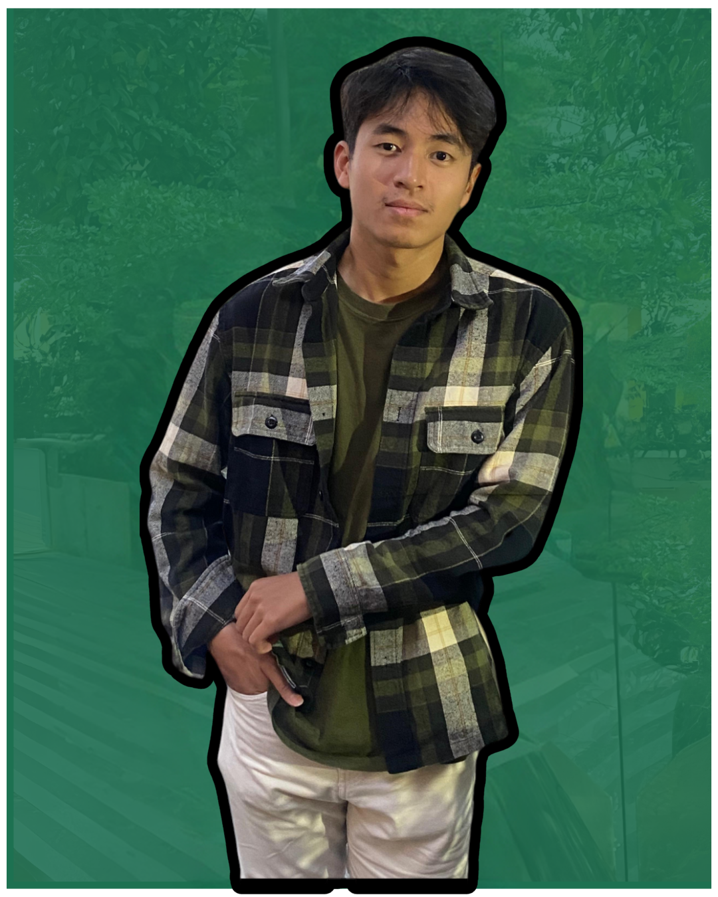

My Portfolio of 1 week with coding
Building a website html
Profile

- Name : Bio Agustian
- Age : 26 years old
- Live : Bandung
- Hobbies : Learning the most profitable knowledge and work remote
- Dream : Become a great programmer & Developer
- Education : High School
Work Experience
- Until 2021 : Pursuing professional football career
- 2022 - present : Real Estate Salesman & marketing (digital)
- October 2024 - present : Graphic Designer and Social Media Management
About Me
I always ambitious in solving problems. It gives a sense pf joy after I fix or solve it.
The one thing I regret is not learn about code. Because I would have been in a better position
than what I am right now. This is a passion that I was looking for. Pursuing to be a programmer/developer
somehow excites me so much and my curiousity about coding just keeps on growing everyday.